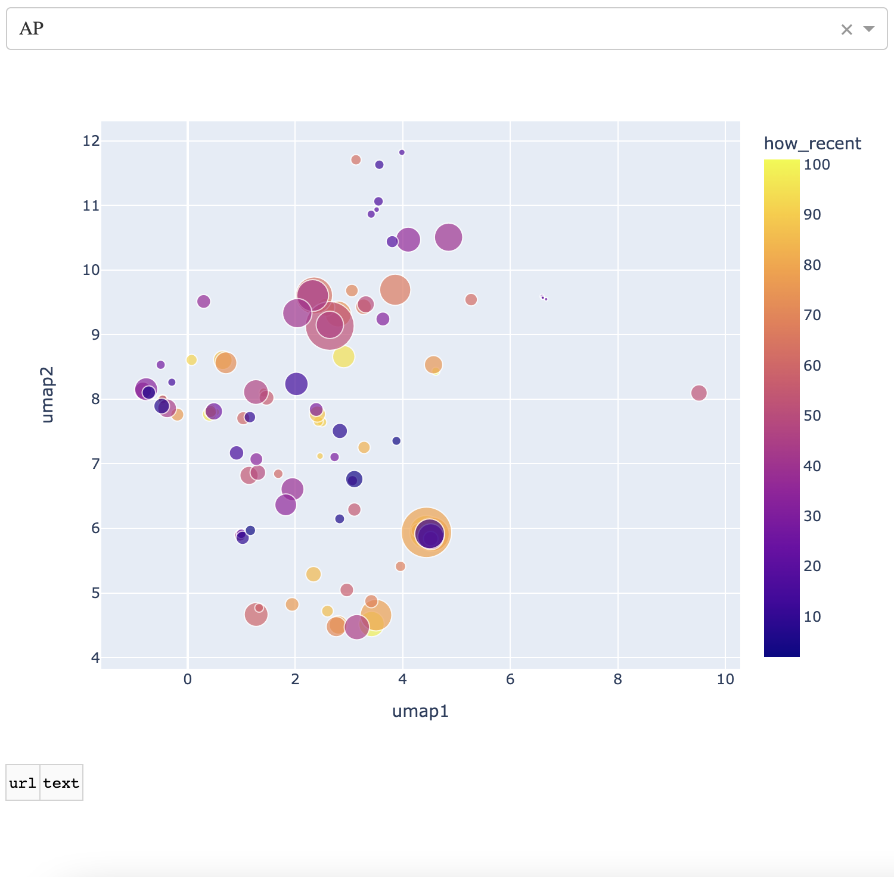
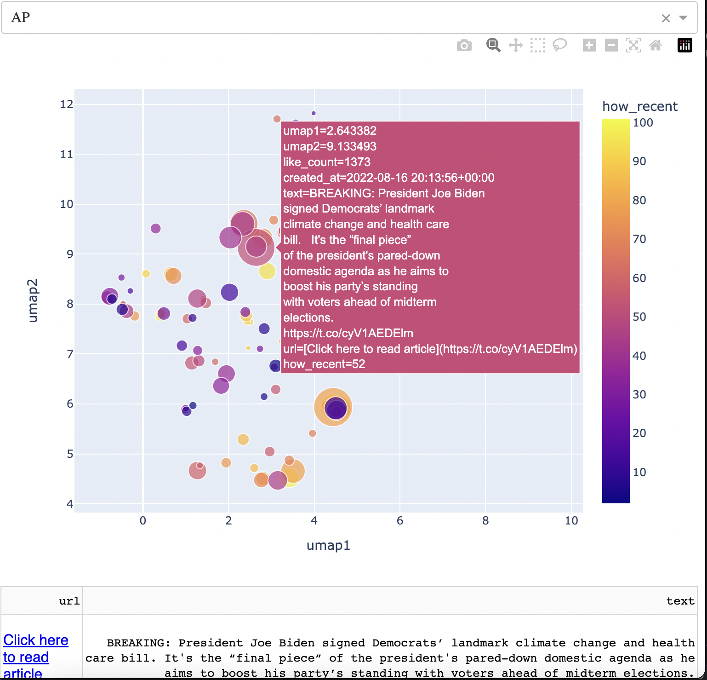
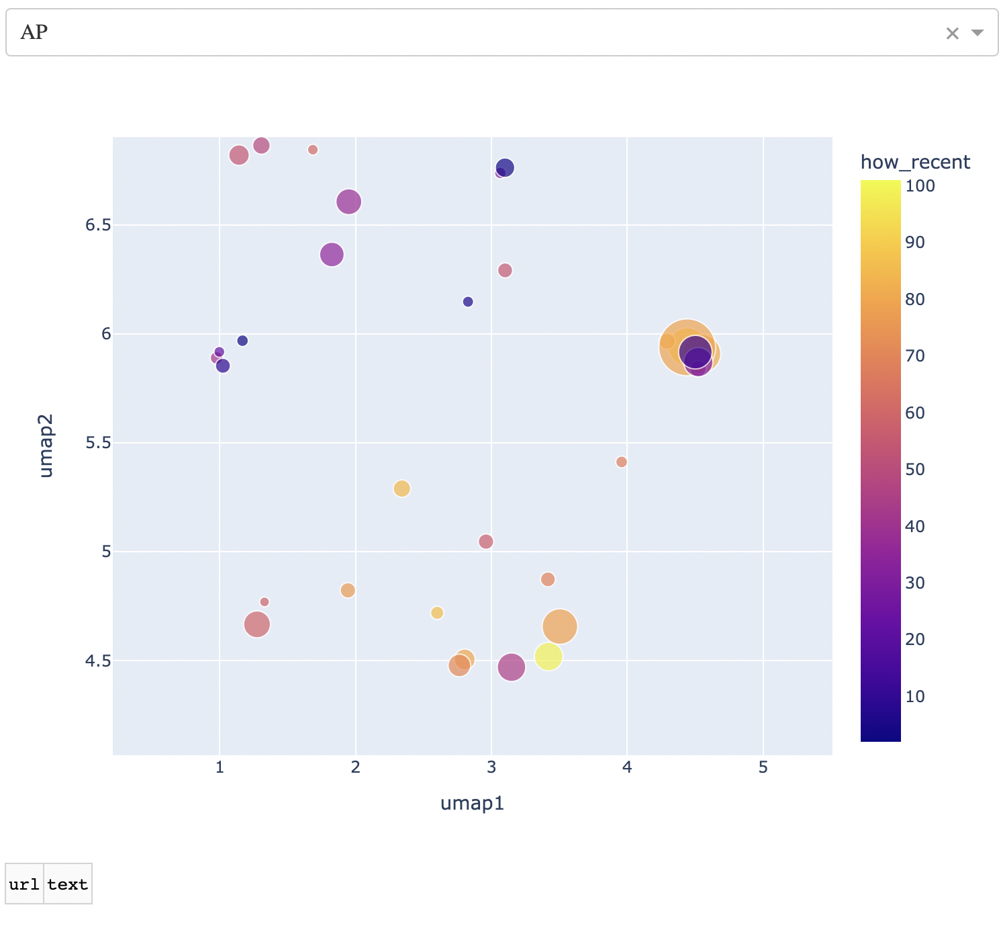
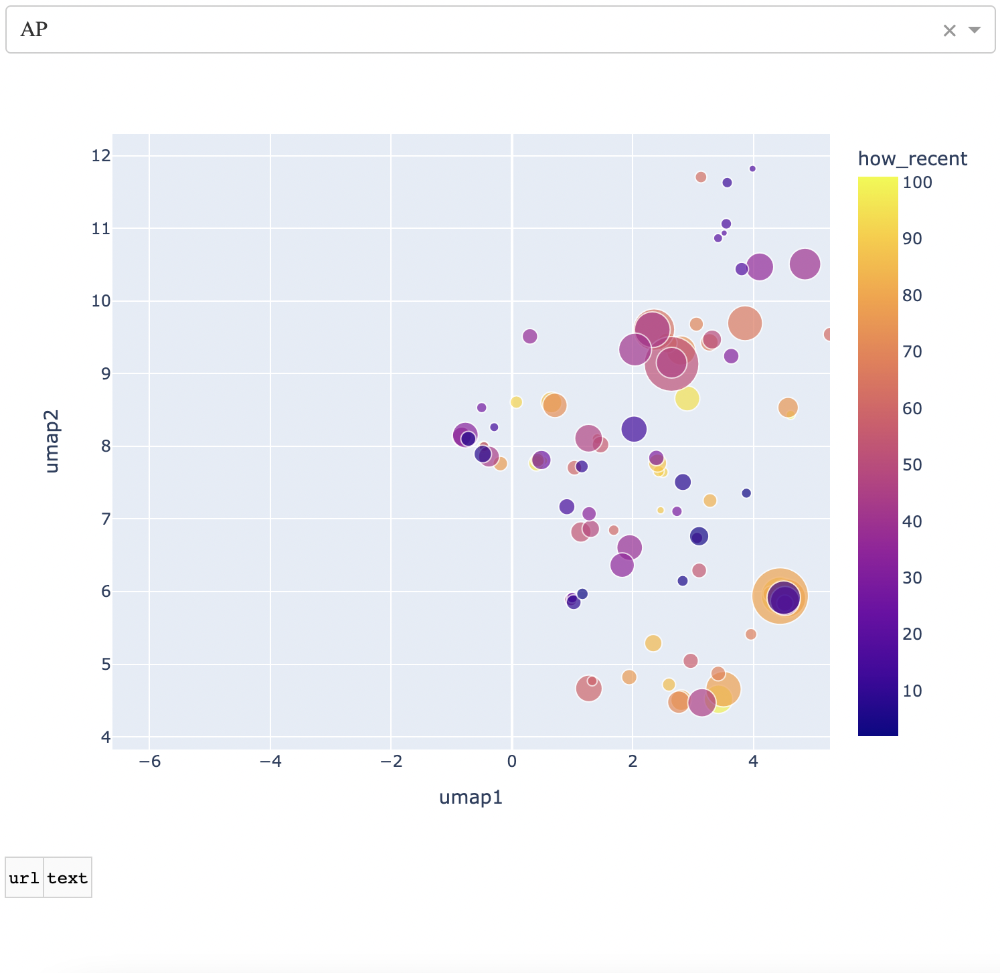

Instructions for using this web app
Click here to return to the app.
General features
You will be presented with a map that has a dropdown menu on top, and the map itself just below that. Associated Press (AP) is set to the default source.

Each point corresponds to a news article, pulled from the twitter handle corresponding to the news source. Larger points have more likes than smaller points. Points that are more yellow happened more recently, as shown by the color scale on the right of the map.
If you're on a standard computer, you can move the cursor over any point on the map. You'll see that a box appears with information about the article corresponding to the point. Importantly, you'll see the article title. If you're on a mobile device, you can get to this box by tapping on one of the points. An example is below.

If you have clicked or tapped on that point, you'll see a one-row table appear below the map. The left column is the url for the article, that you can click on. The right column is the article title (for a sanity check).
To get rid of that box, simply click or tap on any region of the map that does not have a point.
Advanced features
This map is made with an interactive graphics library called Plotly.
You'll see a number of buttons on the top right side of the map. I will say right here that if you click on any of them, or anything weird happens to the map, you can go back to the default view by double clicking/tapping on the map. Here is a zoom-in of the buttons.
Images
You'll see on the left side a camera button. You can use that to get an image of the map in its state.
Zooming
Next to that is a zoom button. That is activated by default. It means that if you click/tap and slide, you'll see a square appear with one corner where you first clicked/tapped and one corner where your cursor/finger currently is. Let go and you'll see that you've zoomed into a particlar region of the map. Below, I zoom into the southernmost region of the map.

Note again that you can zoom back out by double clicking/tapping.
You'll see that there is a box with a plus sign and a box with a minus sign 6 and 7 buttons from the left, respectively. These are also zoom buttons that will zoom depending on where the map is centered. These are only relevant if you're panning the map, which I describe below.
Panning
The third button from the left is two perpendicular bidirectional arrows. If you click/tap on that, then you can click/tap and hold on the map and drag it around. For example, I take the original view and drag everything over to the right below.

None of the other buttons are relevant at this time, but may be down the line.